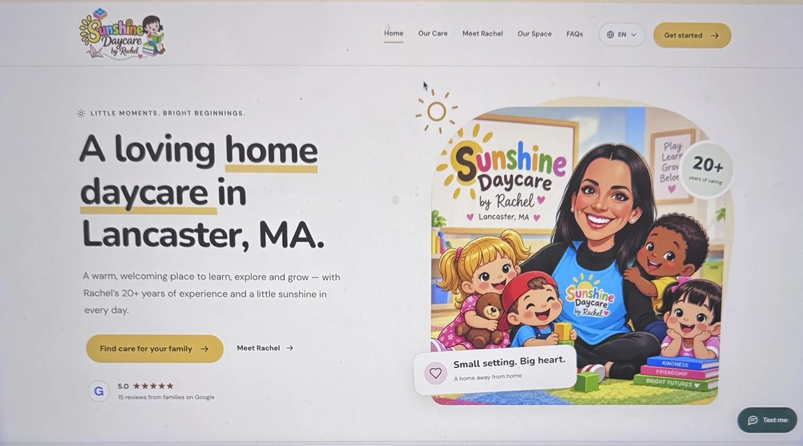
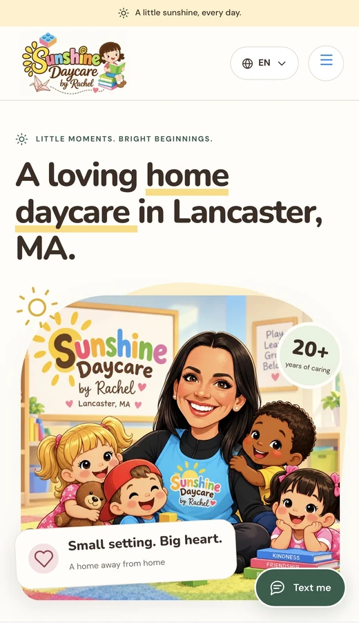
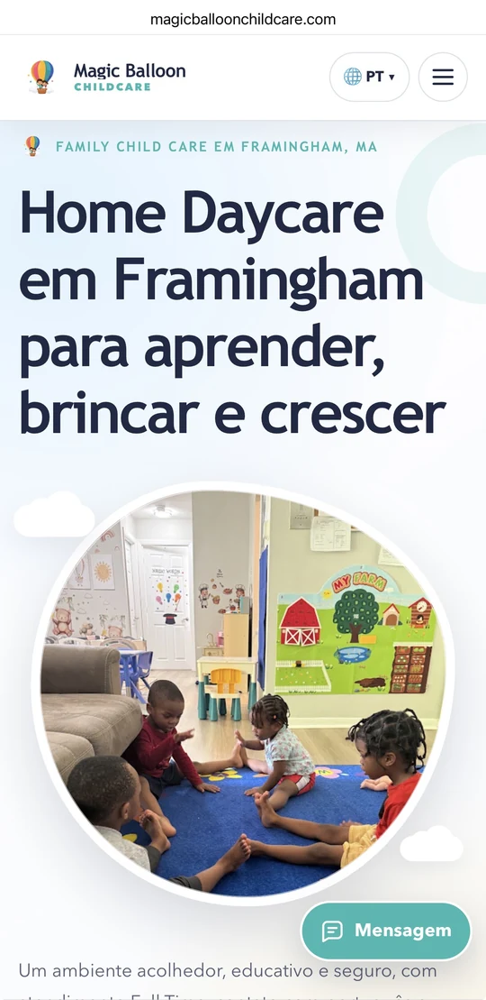
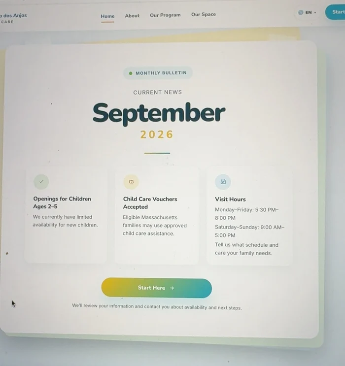
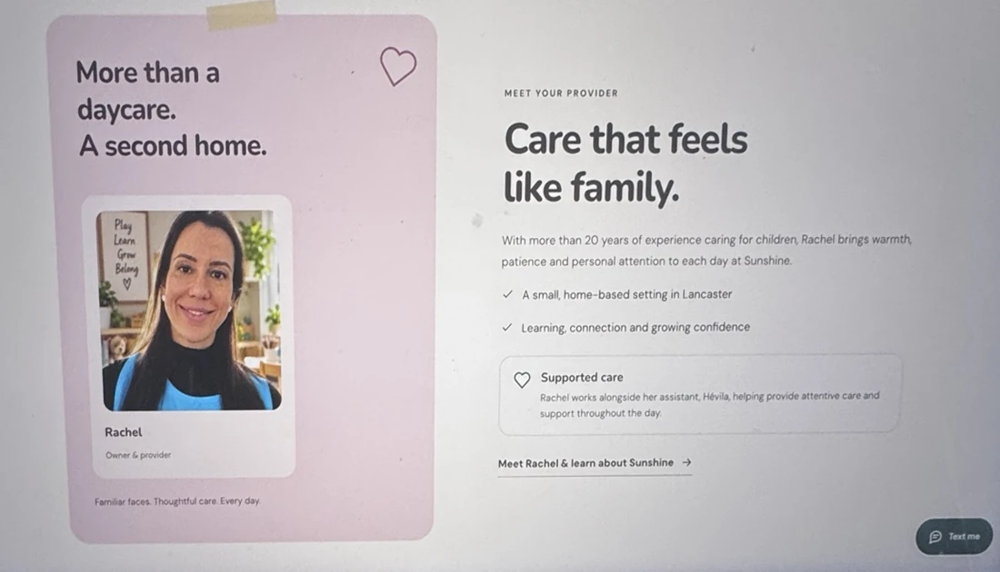
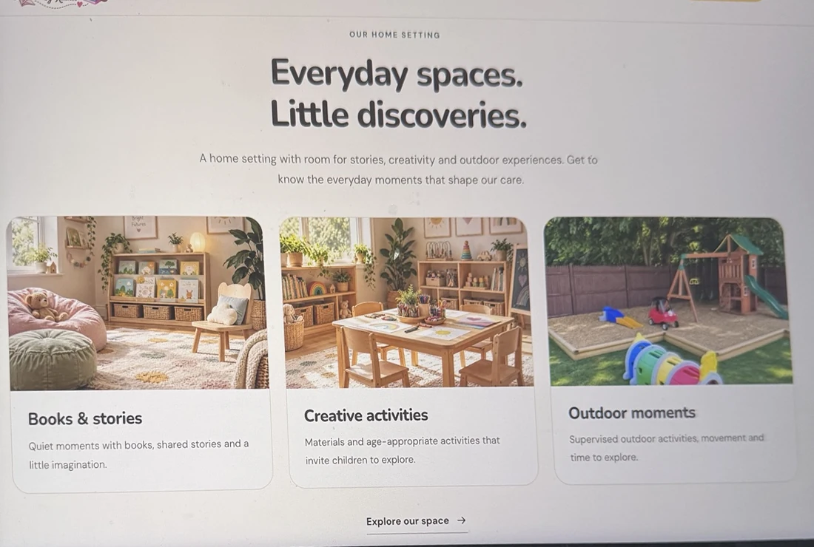
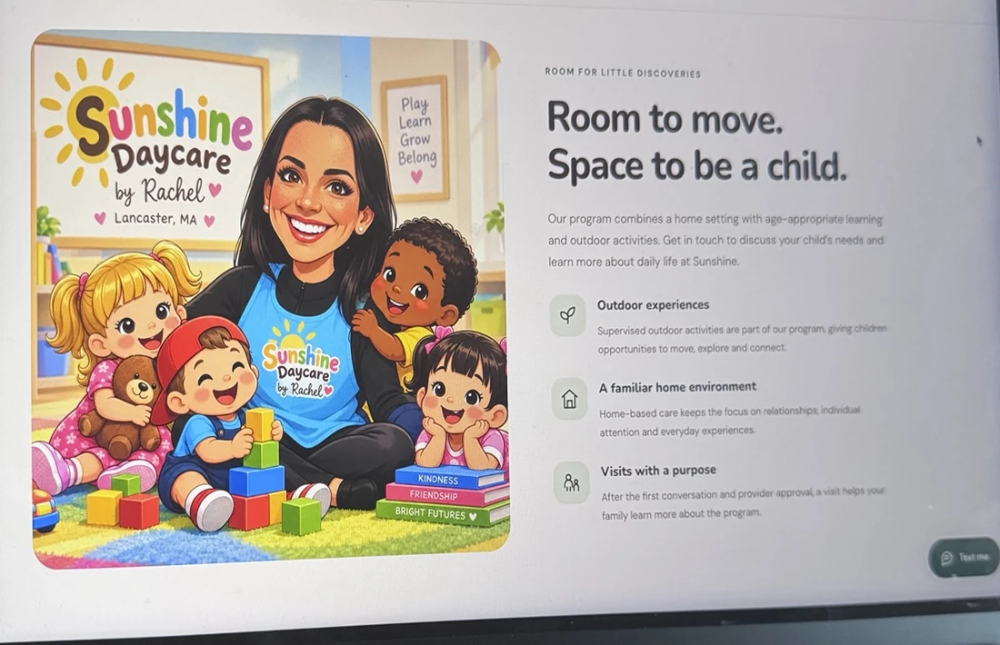

Uma presença profissional
Sua identidade, sua história e as informações da daycare em um endereço próprio.


Um website profissional com a identidade da sua daycare, feito para as famílias conhecerem seu trabalho.
Para Home Daycare & Family Child Care.
Um lugar só para a sua daycare
Instagram e Facebook ajudam a mostrar seu dia a dia. O website reúne as informações que a família precisa, com seu endereço e sua identidade.
Sua identidade, sua história e as informações da daycare em um endereço próprio.
Fotos, textos e botões organizados para quem conhece sua daycare pelo telefone.
Informações locais claras. No Local Growth, uma estrutura ampliada de SEO Local.
Ligar, enviar uma mensagem ou solicitar informações, conforme o plano e o projeto.
Portfólio MateGrowth
Conheça websites criados para daycares. Cada negócio tem sua história — e um jeito próprio de se apresentar.
Website em destaque
Lancaster, MA
Apresentação da provedora, informações do programa, espaço e caminhos para entrar em contato.
Conhecer o website
Framingham, MA

Clinton, MA
Prévias de projetos da MateGrowth. O conteúdo e a disponibilidade informados nos websites podem mudar.
Quem já trabalha com a gente
Depoimentos de clientes sobre a experiência com a MateGrowth.
“Estou muito satisfeita com o trabalho da MateGrowth. Em pouco tempo já obtive resultado. Fiz um atendimento e a família me encontrou através do Google.”
Relato sobre o trabalho de presença digital.
“Trabalho incrível! Muito atenciosos, profissionais e sempre trazendo ideias ótimas. Estou amando o resultado!”
Sobre a experiência de trabalhar com a MateGrowth.
Experiências individuais com os serviços da MateGrowth. Não representam garantia de contatos, matrículas ou posição no Google.
O website por dentro
Uma estrutura que ajuda a apresentar seu trabalho e facilita o próximo passo das famílias.

Registro real do projeto Sunshine
Apresente a provedora, sua experiência e o que torna a daycare especial. Um espaço com a sua identidade — não apenas uma lista de serviços.
Organizado para a sua daycare.
Registro real do projeto Sunshine
Ambientes, atividades e fotos ajudam a apresentar a proposta da daycare antes do primeiro contato.
Organizado para a sua daycare.
Registro real do projeto Sunshine
Reúna idades atendidas, horários, rotina, refeições e diferenciais para facilitar a consulta das famílias.
Organizado para a sua daycare.Registro real do projeto Sunshine
Botões de ligação e mensagem. No Profissional e no Local Growth, integração com formulário simples ou agendamento existente, conforme o projeto.
Organizado para a sua daycare.As páginas individuais e integrações variam conforme o plano escolhido.
Sem complicar seu dia
Definimos a estrutura e confirmamos o escopo do seu projeto.
Logo, fotos, programa, horários e informações da daycare.
Criamos o website e apresentamos a versão para sua revisão.
Publicamos o site. Você recebe 30 dias de suporte inicial.
Escolha a estrutura que faz sentido agora. Implantação com pagamento único, em dólares americanos.
Para começar com uma presença profissional.
Preço regular previsto US$399
US$199
pagamento único • lançamento
Uma página, tudo bem organizado.
30 dias de suporte inicial incluídos.
Nossa indicação para sua daycare
Para apresentar sua daycare de forma mais completa.
Preço regular previsto US$599
US$399
pagamento único • lançamento
O modelo dos projetos que você viu aqui.
30 dias de suporte inicial incluídos.
Para trabalhar a presença nas buscas da região.
Preço regular previsto US$899
US$599
pagamento único • lançamento
Website completo + implantação de SEO Local.
O que é SEO Local? Entenda aqui30 dias de suporte inicial incluídos.
Valores de lançamento em dólares americanos. Tabela regular prevista para depois do lançamento. Registro inicial do domínio e serviços externos são confirmados na proposta. Novos idiomas, páginas e funções fora do escopo são adicionais.
O Local Growth inclui a implantação de SEO Local. Não inclui gestão de Google Business Profile, anúncios, produção contínua de conteúdo ou garantia de indexação e posicionamento.
Da primeira solicitação à organização da sua daycare.
Leads organizados em um só lugar.
Famílias Matrículas Cobranças Financeiro
Family Request
Conheça a família antes do tour.
Contato e necessidades de cuidado.
Informações organizadas em um lugar.
Após sua análise e aprovação, a família pode solicitar uma visita.
Representação ilustrativa do fluxo, não uma captura do sistema.
E depois que o website estiver pronto?
Você não precisa contratar uma mensalidade para ter seu website.
Para manter o website publicado, sem um plano mensal de atualizações.
Hospedagem e gestão técnica do website.
Hospedagem, gestão técnica básica e renovação padrão do domínio.
Alterações de páginas, fotos e textos são cobradas por serviço solicitado. Domínios premium ou com custo especial são avaliados separadamente.
US$59/mês
Para quem prefere que a MateGrowth continue cuidando dos detalhes.
Não inclui novas páginas, redesign, novas funcionalidades, gestão de anúncios ou uma campanha contínua de SEO e conteúdo. Esses serviços são orçados separadamente.
Lado a lado
| Seu projeto | Essencial | Profissional | Local Growth |
|---|---|---|---|
| Estrutura do website | One-page | Multipágina | Multipágina |
| Celular + computador | Incluído | Incluído | Incluído |
| Idiomas | 1 | 1 | 1 |
| SEO técnico básico | Incluído | Incluído | Incluído |
| GA4 + Search Console | — | Incluído | Incluído |
| SEO on-page ampliado | — | Incluído | Incluído |
| Implantação de SEO Local | — | — | Incluído |
| Páginas locais adicionais | — | — | Até 3 |
| Suporte inicial | 30 dias | 30 dias | 30 dias |
| Hospedagem e gestão inicial | 1 ano | 1 ano | 1 ano |
| SmartMate Early Access | Bônus beta* | Bônus beta* | Bônus beta* |
| Implantação no lançamento | US$199 | US$399 | US$599 |
* SmartMate Early Access: bônus sem custo durante a fase beta para os primeiros clientes.
Dúvidas comuns
Uma boa parceria começa com o que está — e o que não está — incluído.
Não. Podemos orientar a escolha e configurar o domínio do seu projeto. Ele deve ficar em nome da daycare. O registro inicial e eventuais custos de domínio especial ou premium são confirmados antes da contratação. Se você já tem um domínio, analisamos como aproveitá-lo.
Sim. Todos os planos são preparados para celular e computador, com imagens, textos e botões adaptados a cada tela.
Não. O primeiro ano de hospedagem e gestão técnica está incluído no projeto. Depois, você pode manter essa gestão por US$100/ano. O Website Care de US$59/mês é opcional e acrescenta pequenas atualizações e acompanhamento contínuo.
Após o primeiro ano, esse valor cobre hospedagem, gestão técnica básica para manter o site publicado e renovação padrão do domínio. Mudanças de conteúdo são orçadas separadamente. Domínios premium ou extensões com custo especial são avaliados à parte. Com o Website Care ativo, não há cobrança adicional dessa anuidade.
Sim. Nos primeiros 30 dias após a publicação, há suporte inicial e correções ligadas à entrega. Depois, pequenas atualizações de fotos e informações entram no Website Care. Sem o plano mensal, você solicita um orçamento para cada serviço. Novas páginas, redesign e funcionalidades extras são sempre avaliados à parte.
SEO é um conjunto de melhorias na estrutura e no conteúdo do website para ajudar mecanismos de busca, como o Google, a entenderem o que sua daycare oferece. Inclui organizar títulos, textos, imagens, links e informações do negócio para tornar a página mais clara para as famílias e para os buscadores.
SEO Local trabalha a presença do seu negócio em buscas relacionadas à sua cidade e região, como “daycare em Lancaster, MA”. No plano Local Growth, aplicamos esse trabalho ao website: otimizamos as informações da cidade principal e criamos até 3 páginas de cidades ou regiões relevantes. A gestão do Google Business Profile é um serviço separado.
Pode ajudar. Uma estrutura organizada e conteúdo relevante facilitam a descoberta e a compreensão das páginas pelo Google. Isso não garante indexação nem uma posição específica nos resultados. A classificação depende de diferentes fatores, e os resultados não são imediatos.
Pode ajudar sua daycare a ter uma presença própria nas buscas. O website reúne informações sobre seu programa, serviços e localização em páginas que podem aparecer no Google. Ele também pode trabalhar junto com seu Google Business Profile, sem substituir o perfil nem garantir uma posição no Google Maps.
Pode ajudar as famílias a conhecerem sua daycare, entenderem seu programa, verem seu espaço e encontrarem como entrar em contato. É uma ferramenta de apresentação e atendimento; a divulgação, a disponibilidade de vagas e o retorno às famílias também fazem parte do processo. Não garantimos matrículas nem um número específico de contatos.
Não. Preparamos a estrutura técnica e o conteúdo conforme o plano contratado. O Google decide quais páginas indexa e como as classifica. O Local Growth é uma implantação de SEO Local, não uma garantia de posição, visitas ou matrículas; campanhas contínuas de conteúdo não estão incluídas.
É um acesso antecipado, sem custo durante a fase beta para os primeiros clientes. O SmartMate ajuda a receber e organizar solicitações de famílias e a conhecer melhor quem está interessado antes de avançar para um tour. O CRM reúne Requests, Tours, Waitlist e Follow-up. Famílias, Matrículas, Cobranças e Financeiro são módulos opcionais, com escopo definido na proposta.
O prazo é informado na proposta antes de contratar, conforme o plano e a agenda de produção. O trabalho começa após o recebimento das informações e materiais necessários: logo, fotos, contato, horários, idades, programa e demais dados da daycare.
O website é da sua daycare e o domínio deve ser registrado em seu nome. A entrega dos arquivos e as opções para assumir a infraestrutura são combinadas na contratação. Migração, configuração em outras contas e treinamento adicional podem exigir um serviço técnico separado.
Todos os planos apresentados incluem 1 idioma. Versões adicionais podem ser incluídas mediante orçamento, com escopo e conteúdo aprovados antes da produção.
Seu próximo passo
Converse com a gente para escolher o website que combina com o momento do seu negócio.
Falar com a MateGrowthWebsite a partir de US$199 • Atendimento em português